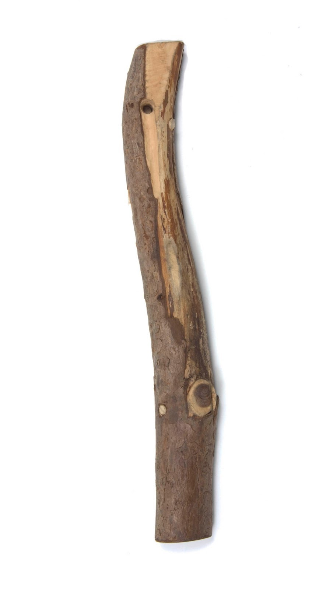
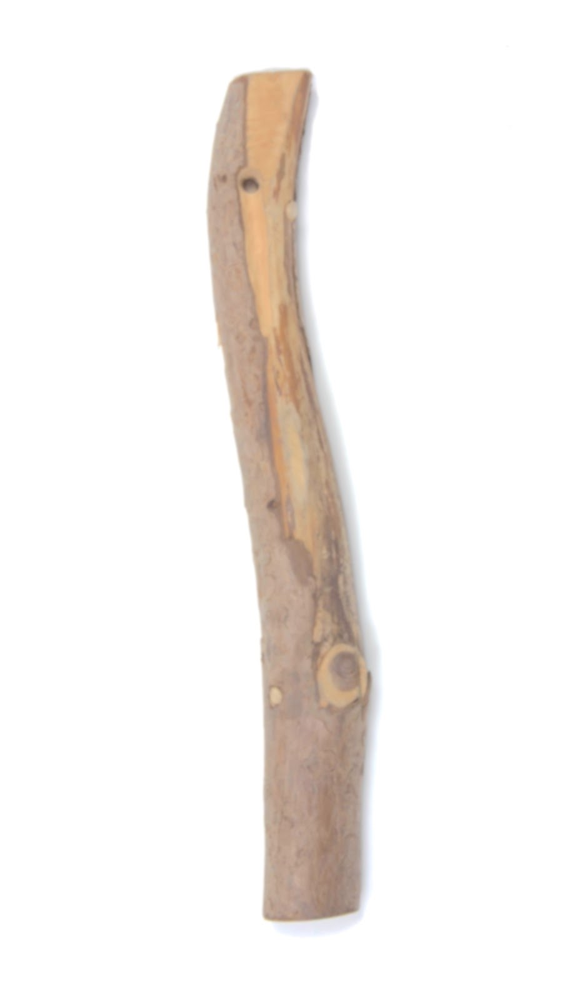

<!DOCTYPE html>
<html>
  <head>
    <title>Experiment 1</title>
    <script src="/socket.io/socket.io.js" type="text/javascript"></script>    
    <script src="jspsych-6.1.0/jspsych.js"></script>
    <script src="jspsych-6.1.0/plugins/jspsych-html-keyboard-response.js"></script>
    <script src="jspsych-6.1.0/plugins/jspsych-html-slider-response.js"></script>
    <script src="jspsych-6.1.0/plugins/jspsych-html-button-response.js"></script>
    <script src="jspsych-6.1.0/plugins/jspsych-image-slider-response.js"></script>
    <link href="jspsych-6.1.0/css/jspsych.css" rel="stylesheet" type="text/css"></link>
  </head>
  <body></body>
  <script>
    var preview = {
      type: 'instructions',
      pages: ['<p> Welcome! In this HIT, you will make a series of quick decisions based on evidence. </p>' +
              '<p> <b> If you are interested in learning more about this HIT, ' +
              'please first accept the HIT in MTurk before continuing further</b>. </p>']
      show_clickable_nav: false,
      allow_keys: false  
    }
    
    var welcome = {
      type: 'html-keyboard-response',
      stimulus: 'Thank you for accepting the HIT. Press any key to begin.'
    }

    window.onload = function() {
      setupGame();
    }
    
    window.onbeforeunload = function() {
      return "Data will be lost if you leave the page, are you sure?";
    };
    
    function setupGame () {
      var socket = io.connect();
      var timeline = [];

      // Values fixed for human experiments.
      var iterationName = 'testing'
      var numSticks = 5
      var agentBias = 10
      var maxStimulusHeight = 300

      // Start building timeline when we hear from server
      socket.on('onConnected', function(mongoData) {

        // get workerId, etc. from URL (so that it can be sent to the server)
        var turkInfo = jsPsych.turk.turkInfo();    

        // Extract stick data from mongo
        var agent1stick = mongoData.stick1
        var agent2stick = mongoData.stick2

        // if still in preview mode, tell them to accept first, otherwise show first slide
        if (!turkInfo.previewMode) { 
          timeline.push(welcome);
        } else {
          timeline.push(preview); 
        }

        var instructions = {
          type: "html-button-response",
          stimulus: "<p> Two players are shown a sample of " +
            numSticks +
            " sticks whose lengths are distributed uniformly between 0 and 10 inches.</p>" +
            "<p>Each player will take one turn " +
            "to show you a stick from this sample. </p>" +
            "<p> After each turn, you must assess your degree of confidence that " +
            "the sample is 'long', i.e., that " +
            "the mean stick length of the sample is at least 5in. </p>" +
            "Player 1 will be paid $" + agentBias + " if your confidence that the " +
            "sample is long is at least 50% after the two turns. Otherwise, Player 2 " +
            "will be paid $" + agentBias + ".</p>" +
            "<p> After each move, you must also assess your degree of belief that " +
            "the player is biased towards showing you longer or shorter sticks. " +
            "<p>Press 'Continue' to see an example.</p>",
          choices: ['Continue']
        };

        timeline.push(instructions);

        // Add example with 5 sticks. Display mean and stick lengths. Show stick
        // choices for each.
        var example = {
          type: "html-button-response",
          stimulus:
          "</img>" +
            "</img>" +
            "</img>" +
            "</img>" +
            "</img>" +
            "<p> In this example, the two players see a sample of sticks of " +
            "lengths 4in, 4in, 5in, 6in, 7in. These sticks are shown above.</p>" +
            "<p> Players 1 and 2 will choose one stick each from this sample, and " +
            "you must assess your belief from these sticks alone whether the overall " +
            "sample mean is 'long', i.e., at least 5in.</p>" +
            "<p> This is true in this example, because the mean stick length is 5.2in.</p>" +
            "<p> If you judged this to be true with at least 50% confidence, Player 1 " +
            "would be rewarded with $" + agentBias + ".</p>" +
            "<p>Otherwise, Player 2 would be rewarded with this amount.</p>" +
            "<p>Press 'Continue' to see more.</p>",
          choices: ['Continue']
        };

        timeline.push(example);

        var reference = {
          type: "html-button-response",
          stimulus:
          "</img>" +
            "<p> In addition, a stick of length 5in will always be shown " +
            "in a lighter shading for reference.</p>" +
            "<p> This stick is <strong>not</strong> in the overall sample. </p>" +
            "<p>Press 'Begin' to start the experiment.</p>",
          choices: ['Begin']
        };

        timeline.push(reference);

        // Make the choices feel more realistic by adding arbitrary delay.
        var pre_first_move = {
          type: "html-keyboard-response",
          stimulus: "<p> Player 1 choosing move... </p>",
          choices: jsPsych.NO_KEYS,
          trial_duration: jsPsych.randomization.sampleWithReplacement([3000, 4000, 5000], 1)[0]
        }

        timeline.push(pre_first_move);

        var first_move = {
          type: "html-slider-response",
          stimulus:
          "</img>" +
            "</img>" +
            "<p> Player 1 shows a stick of length " + (10 * agent1stick) +
            "in from the sample.</p>" +
            "<p> Assess your confidence that the overall sample is long.</p>",
          labels: ['Definitely short.', 'Definitely long.'],
          require_movement: true
        }

        timeline.push(first_move);

        // Allows us to measure the strong evidence effect for listeners.
        var post_first_move = {
          type: "html-slider-response",
          stimulus: "<p> How biased is Player 1? </p>",
          labels: ['Biased towards showing shorter sticks.',
                   'Showing sticks at random.',
                   'Biased towards showing longer sticks.'],
          require_movement: true
        }

        timeline.push(post_first_move);

        // Make the choices feel more realistic by adding arbitrary delay.
        var pre_second_move = {
          type: "html-keyboard-response",
          stimulus: "<p> Player 2 choosing move... </p>",
          choices: jsPsych.NO_KEYS,
          trial_duration: jsPsych.randomization.sampleWithReplacement([3000, 4000, 5000], 1)[0]
        }

        timeline.push(pre_second_move);

        var second_move = {
          type: "html-slider-response",
          stimulus:
          "</img>" +
            "</img>" +
            "</img>" +
            "<p> Player 1 shows a stick of length " + (10 * agent1stick) +
            "in from the sample, and then Player 2 shows a stick of length " +
            (10 * agent2stick) + "in from the sample.</p>" +
            "<p> Assess your confidence that the overall sample is long.</p>",
          labels: ['Definitely short.', 'Definitely long.'],
          require_movement: true
        }

        timeline.push(second_move);

        // Allows us to measure the strong evidence effect for listeners.
        var post_second_move = {
          type: "html-slider-response",
          stimulus: "<p> How biased is Player 2? </p>",
          labels: ['Biased towards showing shorter sticks.',
                   'Showing sticks at random.',
                   'Biased towards showing longer sticks.'],
          require_movement: true
        }

        timeline.push(post_second_move);

        var goodbye = {
          type: 'html-keyboard-response',
          stimulus: 'Thank you for participating! Press any key to exit.',
          on_finish : function() {
            console.log('sending data to mturk');
            jsPsych.turk.submitToTurk();
          }
        }

        timeline.push(goodbye);

        // Store experiment parameter settings in the data.
        jsPsych.data.addProperties({
          numSticks: numSticks,
          agentBias: agentBias,
          agent1stick: agent1stick,
          agent2stick: agent2stick
        });
        
        jsPsych.init({
          timeline: timeline,
          on_finish: function(trialData) {
            // At the end of each trial, send data to server
            var packet = Object.assign({}, mongoData, trialData, {
              dbname: 'bayesian-persuasion',
              colname: 'experiment1',
              wID: turkInfo.workerId,
              aID: turkInfo.assignmentId,
              hitID: turkInfo.hitId,
              iterationName: iterationName
            })
            socket.emit('currentData', packet);
          };
        });

      });
    </script>
</html>
